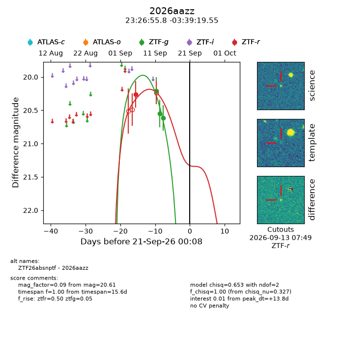
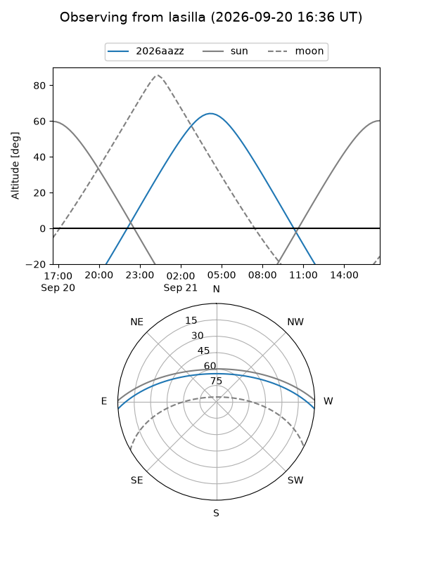
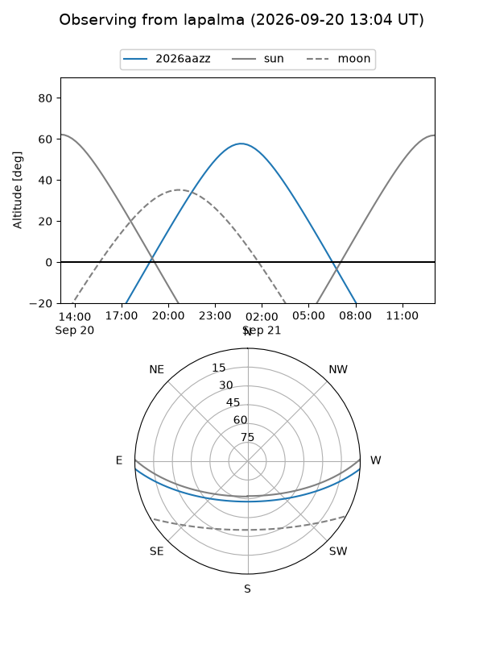
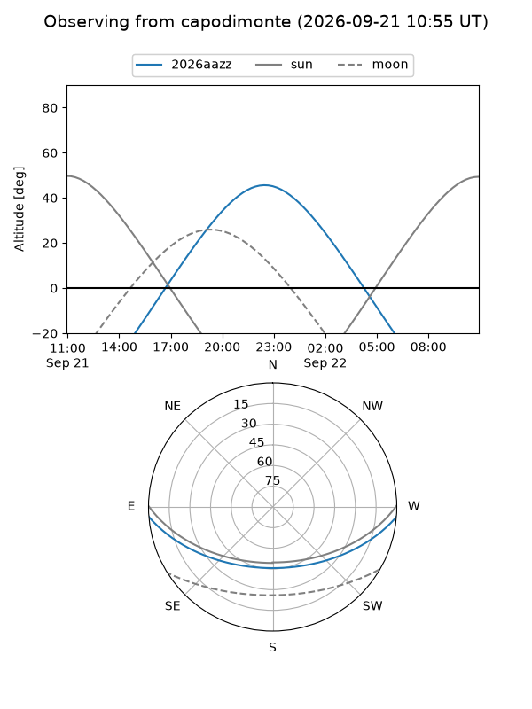
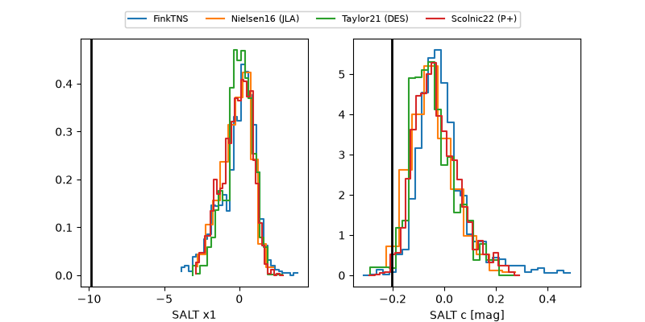

2026aazz
Target 2026aazz at 2026-09-21 11:50
Aliases and brokers:
FINK-ZTF: ztf.fink-portal.org/ZTF26absnptf
Lasair-ZTF: lasair-ztf.lsst.ac.uk/objects/ZTF26absnptf
ALeRCE-ZTF: alerce.online/object/ZTF26absnptf
YSE-PZ: ziggy.ucolick.org/yse/transient_detail/2026aazz
TNS name: wis-tns.org/object/2026aazz
Direct TNS query: direct search
alt names
ZTF26absnptf (ztf,fink_ztf)
2026aazz (tns,yse)
Coordinates:
equatorial (ra, dec) = 351.7325,-3.65543
equatorial (HMS+DMS) = 23:26:55.79,-03:39:19.55
galactic (l, b) = (78.5639,-59.04251)
Flags:
TNS type: nan
peak dt: +14.3
Photometry:
last ztfg=20.61, ztfr=20.26
3 ztfg, 1 ztfr detections
Lightcurve

Visibility



Additional plots
